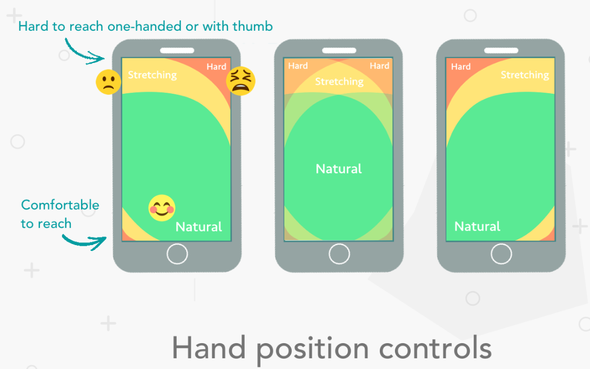

Display only essential content and functionalities the user needs. When designing your products, keep interface elements to a minimum. Simple designs are what keep the user engaged and at ease with products.
Users should intuitively be able to navigate through your app via clear pathways and be able to complete all primary tasks without requiring any explanations.
make interface elements big enough to capture these actions (touch the screens for the users with their fingers )
Apple’s iPhone Human Interface Guidelines suggest a minimum target size of 44 pixels wide x 44 pixels tall. In the Windows Phone UI Design and Interaction Guide, Microsoft suggests a touch target size of 9mm/34px with a minimum touch target size of 7mm/26px.
Allow users to make decisions to personalize their journeys. Changing settings, controlling notifications and cancelling actions provides the user with a sense of control over the system
The strategy for optimal mobile typography is a balance between legibility and space conservation. Generally, anything smaller than 16 pixels (or 11 points) becomes challenging to read for any screen.
It’s important to have sufficient contrast between content and background in your designs so it’s legible, in any setting, even outside in the sunlight.
Accessibility behavioural features should be made available to users to make navigation easier.
what you can do is work around the problem by minimizing the need to enter data in your designs.
Users are always looking for shortcuts and efficient ways to get things done. Help them reduce typing required by shortening forms, removing unnecessary fields and using ‘remember me’ options for future use. Relieve users by providing autocomplete, recent search history and location detection to reduce data entry requirements and accelerate the experience. Display keyboard variations depending on the required data, for example for phone numbers provide the numeric keypad for faster input.
Concéntrese en los objetivos clave del usuario reduciendo la fricción, minimizando los pasos y las cargas de página para disminuir el tiempo de interacción. Haga que el contenido sea accesible incluso sin una conexión en línea y proporcione rutas alternativas para evitar callejones sin salida. Utilice las funciones del teléfono móvil, como la cámara para escanear códigos de barras, el GPS para identificar ubicaciones y la identificación táctil en lugar de códigos de acceso para simplificar los viajes. Los usuarios aprecian las interacciones fluidas con los diseños y están satisfechos cuando sus necesidades se satisfacen sin esfuerzo. La sincronización entre dispositivos es una prioridad clave para crear experiencias perfectas. Hace que los usuarios sientan que su flujo de trabajo no se ve interrumpido y que no están agobiados por tener que hacer el esfuerzo de transferir datos.
La clave para cualquier producto exitoso es probar y optimizar continuamente . Las pruebas de usabilidad son esenciales para el éxito de sus productos. Pruebe diferentes características, diseños y variaciones de sus diseños para ver qué funciona mejor. Cree sus productos con un enfoque centrado en el usuario probando con usuarios reales.